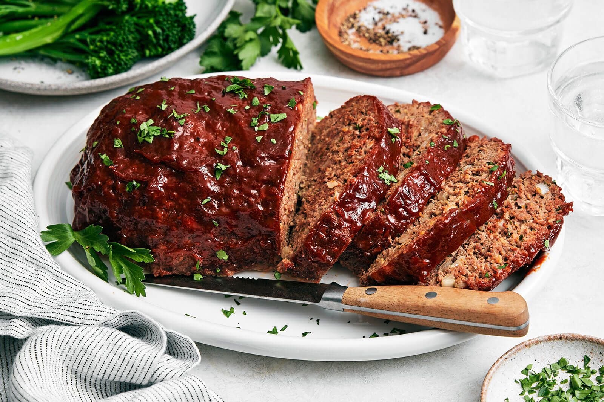

Meatloaf

Description
This traditional meatloaf recipe made with sautéed vegetables, spices, and bread crumbs is moist and flavorful and topped with an old-fashioned glaze. Cook time will depend on the size and shape of your loaf, as well as the type of baking pan you use. Serve this hearty meal on cool fall or winter evenings with mashed potatoes and a simple mushroom gravy.
Ingredients
- Ground Chuck
- Vegetables
- Worcestershire Sauce
- Egg
- Spices
- Bread Crumbs
- Glaze
Steps
- Chop the vegetables
- Combine the vegetables and garlic in a food processor until nearly pureed
- Combine the vegetables, ground chuck, Worcestershire sauce, spices, and egg. Sprinkle in the bread crumbs and mix them with your hands.
- Form the meat mixture into a loaf and place it in a prepared baking pan. Bake for about 15 minutes.
- Combine brown sugar, ketchup, Dijon, and sriracha to make the glaze
- Spoon the glaze over the slighlt hot meatloaf. Return meatloaf to the oven and bake until the internal temperature reaches 160 degrees F.